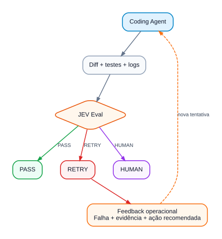
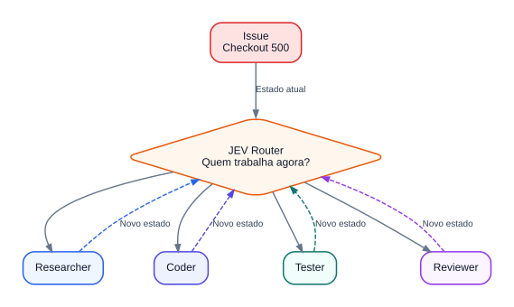
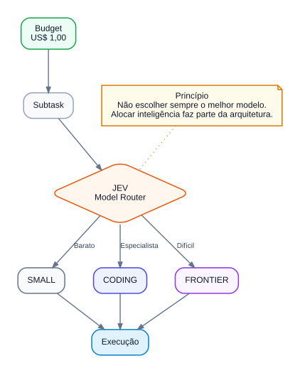
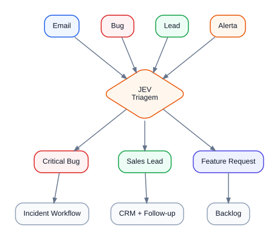
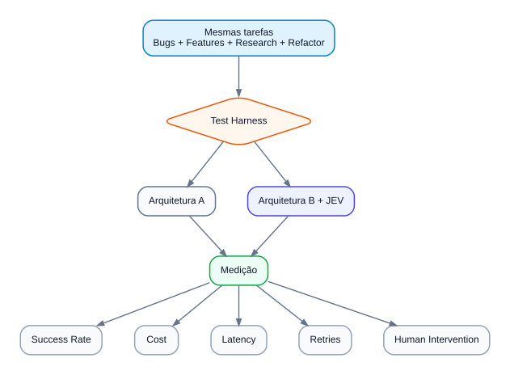

Fluxos JEV
Visualizações dos seis fluxos e arquivos Mermaid correspondentes.
O Fluxo 2 foi diagramado horizontalmente, conforme solicitado.
Fluxo 1 — Coding Agent + JEV Eval

Fluxo 2 — Loop agêntico para agendar consulta
Fluxo 3 — Orquestração de agentes

Fluxo 4 — Orquestração de modelos

Fluxo 5 — Triagem

Fluxo 6 — Benchmark

Os códigos estão em codigos_mermaid.md e na pasta mermaid/.